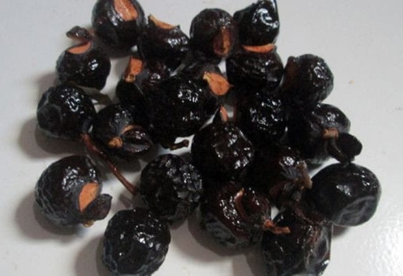
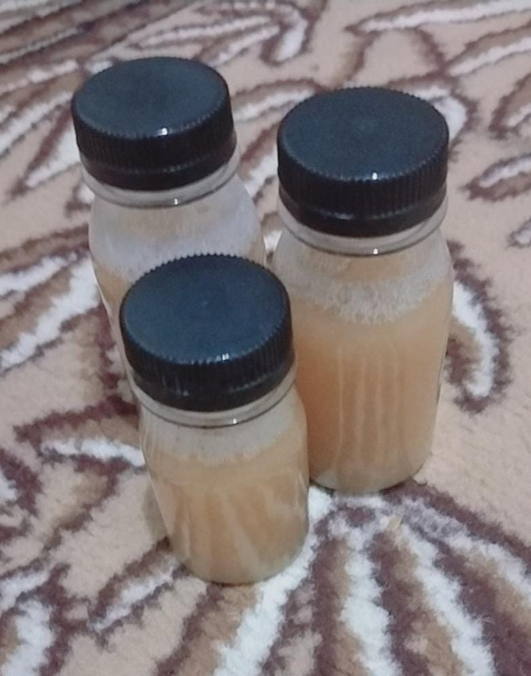
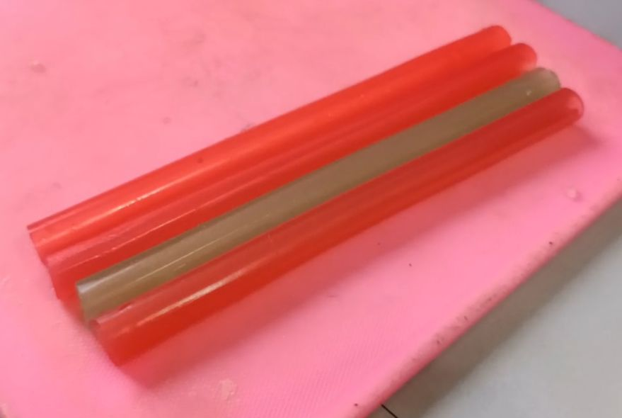

Salak (Sabun Lerak)

Buah Lerak

Sabun Lerak
Latar Belakang
Hampir di seluruh dunia masyarakat menggunakan sabun berbahan dasar kimia yang dapat mencemari lingkungan. Sabun yang berbahan dasar dari bahan kimia dapat mencemari air di sekitar dan juga dapat merusak ekosistem yang ada di air. Cara kita menanggulangi hal tersebut dengan cara menggunakan sabun berbahan dasar alami seperti sabun buah Lerak. Hal ini dapat mengurangi bahaya dari sabun berbahan dasar kimia.
Bahan-Bahan yang Diperlukan:
- Buah lerak
- Air
- Buah lemon
- Daun sereh
Cara Membuat:
- Rendam buah lerak selama 1 hari.
- Peras buah lerak yang sudah direndam sampai buah tersebut mengeluarkan getah yang digunakan untuk pembuatan sabun.
- Rebus air buah lerak yang telah ditambahkan sereh dan lemon sebagai pewangi.
- Setelah mendidih, matikan kompor dan diamkan rebusan sampai dingin.
- Masukkan rebusan air buah lerak ke wadah yang tertutup.
- Sabun buah lerak siap untuk digunakan.
Note: Sabun buah Lerak ini dapat bertahan hingga 7-10 hari.
Sedotan

Hasil Sedotan
Latar Belakang
Pada zaman modern ini banyak sekali masyarakat yang masih menggunakan sedotan plastik. Hal ini mengakibatkan banyaknya sampah plastik yang berasal dari sedotan itu. Selain itu, emisi karbon di bumi semakin meningkat. Salah satu penyebabnya adalah banyaknya jejak karbon yang dihasilkan dari sedotan plastik, mulai dari proses produksi, distribusi hingga konsumsi nya. Karena itu lah, kami ingin mengajak teman-teman semua membuat sedotan yang ramah lingkungan dan dapat bermanfaat untuk membantu mengurangi emisi jejak karbon, yaitu dengan membuat sedotan dari agar-agar dan berbagai bahan lainnya yang ramah lingkungan. Selain itu, kelebihan dari sedotan ini adalah dapat dimakan dalam jangka waktu tertentu setelah dipakai.
Manfaat:
- Sebagai barang alternatif dari sedotan plastik atau stainless.
- Sebagai variasi dalam masyarakat saat mengonsumsi minuman.
- Tidak mengandung bahan kimia sehingga terhindar dari paparan bahan berbahaya.
- Ramah lingkungan dan cepat terurai.
- Mengurangi limbah karena dapat dikonsumsi setelah digunakan.
- Estetik, dengan berbagai warna dan design menambah kesan unik dan modis dalam minuman.
Alat yang Dibutuhkan:
- Panci
- Sedotan kecil
- Sedotan besar
- Plastik
- Botol
- Gelas
- Whisker
- Karet
Bahan-Bahan yang Diperlukan:
- 3 bungkus agar-agar
- 250 ml Air
- Buah lemon
Cara Membuat:
- Panaskan air, jangan sampai mendidih.
- Masukkan agar-agar dan aduk menggunakan whisker, jangan sampai mendidih.
- Potong dan peras lemon, aduk hingga rata.
- Dinginkan sebentar di suhu ruang lalu masukkan ke botol.
- Buat cetakan sedotan dengan mengambil sedotan besar yang bolongan di bawahnya ditutup menggunakan plastik dan diikat.
- Masukkan agar-agar ke dalam cetakan. Isi setengah lalu masukkan sedotan kecil ke dalam sedotan ukuran besar.
- Letakkan di gelas agar sedotan dalam posisi berdiri lalu diamkan atau masukkan ke kulkas selama 15 menit.
- Keluarkan sedotan organik dari cetakan dengan cara membuka plastik di bawah cetakan lalu dorong kebawah sedotan kecil. Selanjutnya sedotan organik di dorong keluar menggunakan sedotan besar.
- Sedotan organik siap digunakan.
Ketahanan
- Suhu ruang: 3 jam
- Minuman dingin: 2 jam
- Minuman panas: 1.5 jam